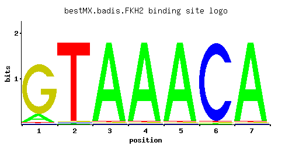

FKH2
YNL068C
Forkhead family transcription factor with a major role in the expression of G2/M phase genes; positively regulates transcriptional elongation; negative role in chromatin silencing at HML and HMR; substrate of the Cdc28p/Clb5p kinase
Best-performing DNA-binding model.

View and copy the recommended matrices ↘
A | 0.13 0.01 0.97 0.97 0.97 0.01 0.97 C | 0.01 0.01 0.01 0.01 0.01 0.97 0.01 G | 0.85 0.01 0.01 0.01 0.01 0.01 0.01 T | 0.01 0.97 0.01 0.01 0.01 0.01 0.01
A | 13 1 97 97 97 1 97 C | 1 1 1 1 1 97 1 G | 85 1 1 1 1 1 1 T | 1 97 1 1 1 1 1
A | -0.90 -3.47 1.11 1.11 1.11 -3.47 1.11 C | -2.89 -2.89 -2.89 -2.89 -2.89 1.68 -2.89 G | 1.55 -2.89 -2.89 -2.89 -2.89 -2.89 -2.89 T | -3.47 1.11 -3.47 -3.47 -3.47 -3.47 -3.47
Alternative candidate matrices 9
Historical matrix candidates from the original ScerTF database. Expand a source to inspect its original logo, scores, and matrix values.
FKH2_AFoat et. al.P = 1.02e-19View matrix ↘
FKH2_BFoat et. al.P = 8.81e-20View matrix ↘
FKH2_CFoat et. al.P = 3.23e-22View matrix ↘
FKH2Harbison et. al.P = 1.07e-32View matrix ↘
FKH2Macisaac et. alP = 1.32e-35View matrix ↘
FKH2Morozov et. al.P = 2.56e-10View matrix ↘
FKH2Pachkov et alP = 2.20e-27View matrix ↘
FKH2Zhu et. al.P = 1.02e-19View matrix ↘
FKH2Zhao and StormoP = 1View matrix ↘
Gene-level annotations and interactions.
Genes bound in ChIP-chip experiments 216 genes
YAL024C, YAL028W, YAL029C, YAL053W, YAL054C, YAR018C, YBL032W, YBL033C, YBL081W, YBL082C, YBL083C, YBL097W, YBR009C, YBR010W, YBR037C, YBR038W, YBR049C, YBR051W, YBR065C, YBR077C, YBR078W, YBR092C, YBR133C, YBR135W, YBR138C, YBR139W, YBR158W, YCL059C, YCL063W, YCL064C, YCR024C-A, YCR075C, YDL017W, YDL018C, YDL173W, YDL174C, YDL215C, YDL224C, YDR033W, YDR113C, YDR115W, YDR146C, YDR147W, YDR148C, YDR150W, YDR259C, YDR263C, YDR312W, YDR313C, YDR324C, YDR325W, YDR451C, YDR452W, YDR500C, YDR501W, YER070W, YER078C, YER079W, YER094C, YER095W, YER124C, YER125W, YER189W, YER190W, YFL021W, YFL022C, YFR017C, YFR023W, YGL007W, YGL008C, YGL021W, YGL028C, YGL114W, YGL116W, YGL162W, YGL183C, YGL256W, YGL257C, YGR050C, YGR092W, YGR098C, YGR099W, YGR184C, YGR229C, YGR230W, YHL023C, YHL024W, YHR001W, YHR031C, YHR032W, YHR061C, YHR143W, YHR151C, YHR152W, YIL123W, YIL130W, YIL131C, YIL158W, YIL169C, YIL173W, YJL036W, YJL051W, YJL078C, YJL079C, YJL112W, YJL158C, YJR091C, YJR092W, YJR109C, YJR110W, YJR127C, YJR145C, YJR146W, YJR147W, YKL069W, YKL096W, YKL096W-A, YKL097C, YKR040C, YKR042W, YKR054C, YKR055W, YKR059W, YKR093W, YLL016W, YLL063C, YLR044C, YLR084C, YLR103C, YLR104W, YLR105C, YLR131C, YLR154C, YLR189C, YLR190W, YLR272C, YLR286C, YLR287C-A, YLR300W, YLR390W-A, YLR399C, YLR400W, YLR437C, YLR438W, YLR439W, YML035C, YML050W, YML052W, YML053C, YML057W, YML063W, YML064C, YML068W, YML111W, YML116W, YML124C, YML125C, YMR076C, YMR105C, YMR117C, YMR144W, YMR145C, YMR163C, YMR166C, YMR167W, YMR183C, YMR184W, YMR197C, YMR198W, YMR199W, YMR204C, YMR215W, YNL040W, YNL041C, YNL046W, YNL047C, YNL056W, YNL058C, YNL145W, YNL170W, YNL172W, YNL173C, YNL174W, YNL176C, YNL196C, YNL218W, YNL219C, YOL023W, YOR095C, YOR096W, YOR138C, YOR140W, YOR236W, YOR246C, YOR247W, YOR248W, YOR312C, YOR315W, YOR316C, YOR369C, YOR372C, YOR373W, YPL024W, YPL025C, YPL111W, YPL116W, YPL117C, YPL140C, YPL141C, YPL142C, YPL155C, YPL198W, YPR035W, YPR119W, YPR149W, YPR184W
Genes affected by TF deletion 162 genes
YMR109W, YGR093W, YMR220W, YMR192W, YCR009C, YLR243W, YPL236C, YAL036C, YDL063C, YKL079W, YKL110C, YLR433C, YLR435W, YGR033C, YMR101C, YOL077C, YPL266W, YDR339C, YDR280W, YMR314W, YMR290C, YPL084W, YJL050W, YBR129C, YNL112W, YOL076W, YOL139C, YOR344C, YOR290C, YER029C, YJL208C, YLR183C, YMR289W, YPL215W, YGR160W, YGR134W, YMR202W, YNL283C, YOR043W, YBR009C, YER148W, YMR049C, YOR198C, YOR232W, YJR148W, YLL008W, YBR166C, YGR159C, YJL124C, YKL087C, YLR437C, YNL248C, YOR008C-A, YOR074C, YOR323C, YPR060C, YGL111W, YLR196W, YML093W, YPL086C, YPL122C, YKL021C, YLL037W, YMR140W, YMR142C, YNL182C, YNL120C, YNL124W, YOL115W, YOL149W, YOR294W, YOR354C, YPL273W, YPR023C, YPR055W, YPR025C, YPR057W, YNL039W, YDL201W, YGL078C, YGR253C, YKL144C, YKL212W, YLR129W, YLR163C, YLR195C, YML035C, YML063W, YML094W, YMR290W-A, YMR321C, YNL308C, YNR038W, YKR030W, YOR209C, YLR074C, YNL289W, YOR051C, YOR021C, YPL066W, YER156C, YKR056W, YLR260W, YMR027W, YML130C, YNL068C, YNL100W, YOR272W, YJR041C, YDL143W, YHR132C, YMR173W-A, YMR239C, YBR142W, YGR079W, YOR300W, YOR361C, YER072W, YJL167W, YLR140W, YNR012W, YPL098C, YPL130W, YPL162C, YDR481C, YFL054C, YMR146C, YNL160W, YNL132W, YCL031C, YDR322W, YPL159C, YHL034C, YMR033W, YNL046W, YOL070C, YGR117C, YPL070W, YGL255W, YMR001C, YPL259C, YPL202C, YKL009W, YBR216C, YDL085W, YDL117W, YEL037C, YGR145W, YHR137W, YNL232W, YNL264C, YNL234W, YPL044C, YMR093W, YNL141W, YOR343C, YIL011W, YML052W, YGR024C, YJL044C, YGR267C, YPL169C
Genes supported by both experiments 6 genes
YBR009C, YLR437C, YML035C, YML052W, YML063W, YNL046W
Predicted TF–TF partners 6 genes
HCM1, MBP1, MCM1, NDD1, STB1, SWI4